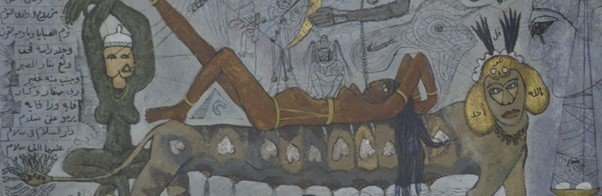
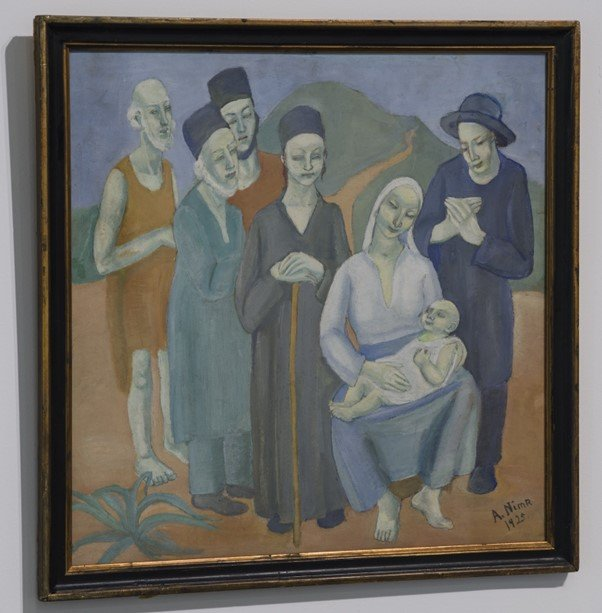
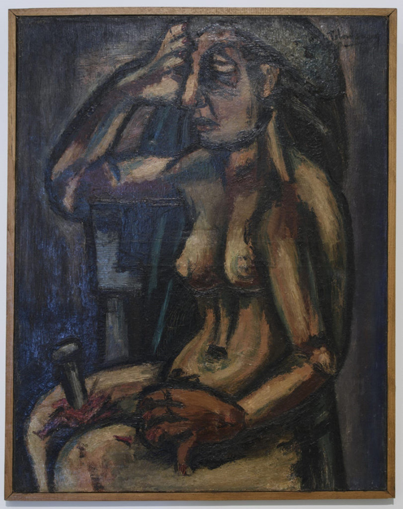
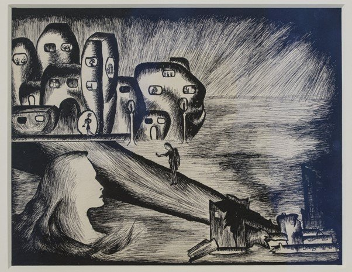
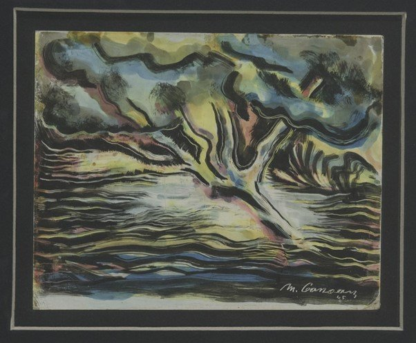
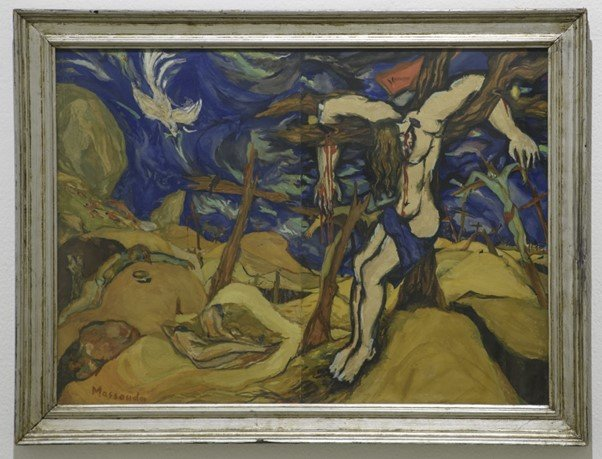
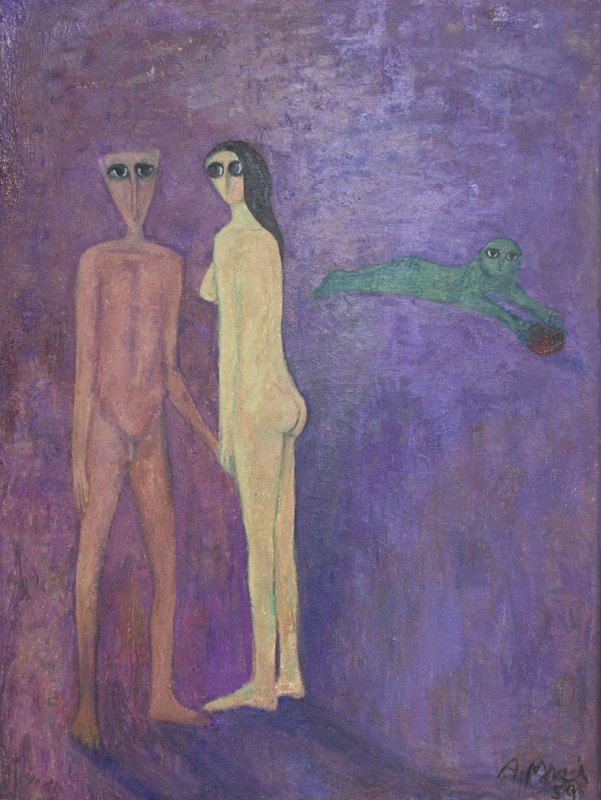

Originally published in Mada Masr on 21 November 2016
By Ismail Fayed

Abdel Hadi El-Gazzar, The Jinny Lover, 1953. Oil on canvas, 76 x 52 cm. Detail
A recent exhibition in Cairo, When Art Becomes Liberty: The Egyptian Surrealists (1938-1965), raised crucial questions on how artistic legacies are assessed and understood in a context like Egypt's, and how they can be appropriated and sometimes given radically different new meanings.
Showing from September 28 through October 28, it came during an international flurry of interest in modern and contemporary Arab art and its relation to a more global context, which was prompted in large part by new collecting practices and the economies surrounding them. The recent auction of Mahmoud Said's Whirling Dervishes (1929) for more than US$2 million at Christie's is a poignant example of the current fashion and curatorial trend for the Egyptian surrealists.
The main advocates of surrealism in Egypt, the Art and Liberty group (1939-1945), had mixed relationships with the state at best. Nearly all faced some kind of persecution by the government – not excluding exile and imprisonment. Their legacy enjoyed a small revival in the mid-1980s via the work of historian Samir Gharib, but they had to wait three more decades before a major retrospective was mounted — not due to the initiative of any Egyptian party, but by the Sharjah Art Foundation, which did however partner as organizers with the American University in Cairo and Egypt's public Fine Arts Sector.
When Art Becomes Liberty was held at the state-run Palace of the Arts, part of Cairo's Opera House complex, which emerged just as the Soviet model that dominated Egyptian arts from 1957 and 1986 gave way to an art scene that was controlled by the state, yet reliant on foreign funding — the complex itself was a gift from Japan on the occasion of former president Hosni Mubarak's visit to the country in 1983. The Palace of the Arts opened amid a brief arts renaissance in the late 1980s, but was quickly overrun by incompetent bureaucracy and a paranoid security mentality. Now, it has no artistic program save the annual Youth Salon and General Exhibition, in addition to occasional unconnected events, in collaboration with other institutions, that appear with little warning.
In such a context, what Sharjah Art Foundation managed to do for an Egyptian audience is no mean feat. Out of 160 works displayed, 43 were from its own collection, reflecting the past decade's trend for culture patronage in the Gulf countries and the changing landscape of art collecting in the region. Meanwhile, getting various institutions to release extraordinary artworks that are locked away in museum storage rooms, often in terrible conditions, to display them in one place was a real boon for Egyptians, who are constantly turned away at museums by uninterested staff. But it also raises the question of whether those national collections released artworks only because Sharjah Art Foundation asked. Such moral hypocrisy is not new for the Fine Arts Sector, which is eager to collaborate with foreign institutions (this spring's Cairotronica, in partnership with the American University and various foreign cultural centers, is an example) and yet does not care to properly manage and display its collections for their rightful primary audience, namely Egyptians.
When I read that When Art Becomes Liberty would be held at the Palaces of the Arts, my first question was how they would navigate the bureaucracy of the Fine Arts Sector and its security mentality. But I soon realized that generous patronage can co-exist seamlessly with oppressive securitization. I was greeted with suspicion when I went to the exhibition as an Egyptian. I was required to show photo ID and write down my ID number, occupation and the time and purpose of my visit. I had hoped that, for the sake of appearance and the possibility of an international audience, the Palace of the Arts would temporarily forsake such measures. I grudgingly wrote down my personal details and was told, in a strict tone, that I could not take photographs unless I was registered with the Journalists Syndicate, which I am not. As usual for exhibitions at the Palace of the Arts, there was no floor plan, brochure or press material.

Amy Nimr, The Birth, 1925. Oil on plywood, 48.5 x 48.5 cm. Installation view
"This exhibition explores the history and evolution of the Egyptian Surrealists and their remarkable legacy both within Egypt and in international Surrealist circles," stated the wall text, which gave me the impression that an international dimension would be manifest in the selection of works exhibited. For a moment, I thought the Egyptian surrealists would finally be placed in a holistic historical context and that we would see how they fared vis-a-vis an international movement — this would have been a true breakthrough for the Egyptian surrealists and their legacies. Unfortunately, that was not the case. There were not even any artworks from elsewhere in the Arab world to show the extent of surrealist ideas in the region, and we are left to wonder about parallel artistic engagements in Syrian, Iraq or Tunisia. The focus on Egyptian artists and artworks limited this radical potential and relegated the exhibition to being one among others recently devoted to assessing Egyptian surrealism.
Indeed, the recent interest has the potential to threaten the movement's unique relevance to an Egyptian audience beyond the whims of curatorial fashions and the fetishization of native intellectuals of former colonies. To their credit, the curators of When Art Becomes Liberty — Hoor Al Qasimi, Salah M. Hassan, Ehab Ellaban and Nagla Samir — tried to display the myriad influences of the works of the Art and Liberty group on other Egyptian artists and what that meant for generations of artists that came after. But this was also the exhibition's main weakness: It seemed to operate on the premise that every artist contemporary to and succeeding the Art and Liberty group was directly influenced by them, while, in fact, most artists born after 1930 were influenced by surrealism and the avant-garde in one way or another, in Egypt and elsewhere. It is impossible to attribute that to Art and Liberty alone, or to any particular artist. The extraordinary diversity that surrealism's influence created was in some ways profoundly at odds with the group and what they stood for.
Abdel Hady al-Gazzar is one example. It is laudable that business mogul Naguib Sawaris was persuaded to loan out his Gazzar collection, but Gazzar is a problematic example of the influence surrealism had on Egyptian modernism, specifically the version Art and Liberty advocated. Gazzar was incredibly critical of the monarchy – his famous work The Folk Choir or Hunger (1946) got him and his mentor Youssef Hussein Amin jailed for insulting the king – but later became very eager to ally himself with the post-independence regime. His propagandistic salutes to Gamal Abdel Nasser's vision of an Arab socialist republic, such as his paintings The Charter (1962), Peace (1956) and High Dam Man (1967), contradicted Art and Liberty's calls to resist authoritarian propaganda and for a truly emancipated artist. In the exhibition, Gazzar's works from the mid-1960s looked like an eyesore next to the subversive techniques, styles and subject matters of the Art and Liberty group two decades earlier. It is not clear where the liberty was in Gazzar's co-optation, out of his volition or due to political pressure, that put his art in service of political goals that may have seemed noble but conferred moral and aesthetic legitimacy on a government rife with oppression and paranoia.

Kamel Telmisany, Untitled (Seated Nude), 1941. Oil on canvas, 73 x 58 cm. Installation view
Visually too, the artworks didn't reflect a convergence in style or subject matter. Samir Rafi's scenes of domesticity (La Femme avec Le Livre, 1943-1944 and La Famille, 1956) clashed with the existentialist, psychologically charged works of the young Inji Efflatoun and Art and Liberty members. These latter works include Efflatoun's Contemplation (1940s), a voluptuous ink-on-paper urbanscape overwhelming several mysterious figures, as well as Al-Hussein Fawzi's macabre, struggling figures in black ink (Hunger, 1934), and Fouad Kamel's distraught-looking human figure at the center of a animalistic landscape (An Exhausted Dream, 1939). There's also Kamel Telmisany's Untitled (Seated Nude) (1941), an expressionistic portrait of a seated woman with a large, bloody nail pinned in her thigh, and Ramses Younan's Nature Loves a Vacuum (1944), a nightmarish painting of what looks like a raft made of body parts depicted against a rising sea as a solitary figure wanders into the distance. All seem to show people struggling against a precarious, unfathomable reality.

Inji Efflatoun, Contemplation, 1940. Ink on paper, 18.5 x 24 cm. Installation view
But even the "populist surrealism" of Hamed Nada and Gazzar, which developed a distinct visual vocabulary embedded within the cultural reservoir of Egyptian folklore and mythology, looks like a naïve derivative of what George Henien and Ramsis were trying to do in their group exhibitions of the 1940s. Although the populist surrealist works, through extensive use of symbolism, carry significance for many viewers and remain the most immediately relatable of the artworks, it is difficult to see them as extensions, ideologically or artistically, of Art and Liberty's vision. Their bearing on surrealism has to do with their mining of the Egyptian unconscious to examine notions of sociality, faith and sexuality. That piercing, inward-looking gaze can be directly attributed to the state-sanctioned folk revival after the 1952 independence and a need to ground all artistic practices within a specific, purist, national identity.
In a sense, Nada and Gazzar used folk idioms and motifs for reasons diametrically opposed to the Art and Liberty Group's aims. These were artistic propositions not inspired by radical experimentation but developed in response to a nationalistic rhetoric. The propagandistic turn in Gazzar's work and the many artworks that investigate the pervasive fatalism and superstition of Egyptian society — Gazzar's The Jinny Lover (1953, above) and The Fortune Teller (1953), Samir Rafi's Witchcraft (1988) and Hamed Nada's Fortune-teller and the Cat (1989) — reflected the folk identity celebrated by the rulers of the newly independent nation and attempted to engage an audience that might have been alienated by the conventional subject matter and style of western fine art.

Mounir Canaan, The Holy Tree, 1945. Oil on cardboard, 17 x 20 cm

Ibrahim Massouda, The Sacrifice. Gouache on paper, 74 x 55 cm. Installation view
The real surprise in When Art Becomes Liberty was the religious works, specifically ones dealing with Christian iconography. Amy Nimr's The Birth (1925), a colorful rendition of the nativity scene, has some figures that look universal and others that look specifically Egyptian. Rateb Seddek's meter-high Cain and Abel (undated), shows two massive softly-painted figures against a mountainous backdrop — one carrying the other, giving a sense of a distressing burden. Efflatoun's The Church Altar (1940s), with towering gothic columns and two figures kneeling to pray, reflects the physical and psychological weight of religious experience. In Ibrahim Massouda's The Sacrifice (undated), the first rendering of the crucifixion I have seen by an Egyptian painter, a Jesus-like figure hangs from a tree, while the whole scene unfurls in vibrant, confused turmoil. In Mounir Canaan's The Holy Tree (1945), a stunning abstracted landscape, the tree is outlined in quivering black brushstrokes, while light yellow, pinks and blues dissipate around its shape. In Ahmed Morsi's Adam and Eve (1959), a goggle-eyed woman and man in a dreamy pastel landscape face away from a small green humanoid clutching an apple. Samir Rafi's l'Annonciation II (1977) is a Cubist-inflected rendition of the Annunciation of the Virgin Mary, with thick contoured figures in a domestic interior.

Ahmed Morsi, Adam and Eve, 1959. Oil on wood, 119 x 89 cm. Installation view
Religious themes were seldom explored in Egyptian modern art (exceptions include Said's Whirling Dervishes, 1929, and The Prayer, 1934), with Christian iconography particularly rare. Such works are almost never exhibited or discussed in depth. Representation in general and depictions of religious motifs and figures in particular still elicit hostile reactions from some Egyptian and Arab audiences, so I wondered what impression it left on the general audience. I expected a backlash, but it hasn't happened yet.
Apart from this, there were very few deviations from themes of superstition, domestic iconography and existentialist portraiture, but Hamed Nada's Folkways (undated) was one exception. An erotically charged image which looks hastily executed, it shows three colorful couples engaging in sexual activity, yet there's something macabre about it: The hastiness seemed to betray an uneasiness on part of the artist, as if he was witness to something he shouldn't have been.
The exhibition did not follow a strict chronological or thematic display, and it was unclear why certain works were selected or displayed with one another. But all the artworks had the benefit of detailed and proper labeling, something that is sorely missed in most exhibitions at the Palace of the Arts.
As a product of the region's changing economic and political landscape and a manifestation of a broader interest in "global modernisms" and modernist ideas from former colonies, When Art becomes Liberty was a nod to that growing awareness and a reminder of the limits of such trends and their potential for fetishization. Egyptian modernism was part of a global context, but it is more interesting to define it in what remains and resonates with contemporary Egyptians than how it is perceived by others. In that sense, the exhibition did remind an Egyptian audience of a legacy rarely acknowledged by the state or its intelligentsia.
The circumstances of the exhibition also highlighted the Egyptian state's deeply problematic relationship with its own legacy. One question that came to mind is whether Egypt's museums will go on to sell the works in their possession. Since the works are neither displayed, nor cared for, I am inclined to say I would rather have them sold than destroyed by sheer negligence. It is painful to witness how these artworks are locked in storage, collections now worth millions, and only displayed at the behest of foreign institutions. There is no liberty in revolutionary art existing according to the whims of the global art market and a paranoid security state. Hopefully the call of the Art and Liberty Group will be seen for what it was, a call for a truly emancipated art — one that is incredibly relevant for a new generation struggling to fulfill its own utopian ideals against all odds.